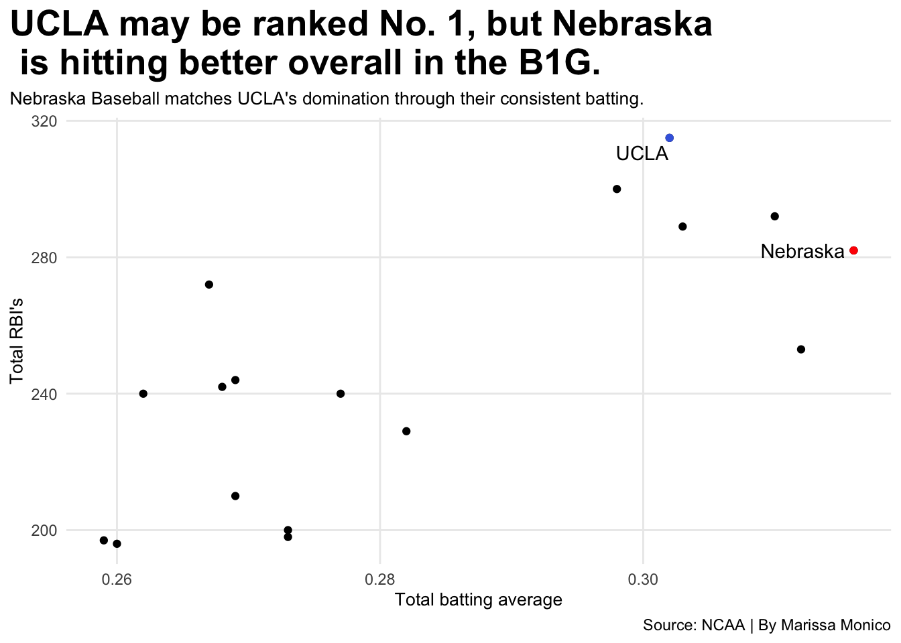

Code
library(tidyverse)── Attaching core tidyverse packages ──────────────────────── tidyverse 2.0.0 ──
✔ dplyr 1.2.0 ✔ readr 2.1.6
✔ forcats 1.0.1 ✔ stringr 1.6.0
✔ ggplot2 4.0.2 ✔ tibble 3.3.1
✔ lubridate 1.9.4 ✔ tidyr 1.3.2
✔ purrr 1.2.1
── Conflicts ────────────────────────────────────────── tidyverse_conflicts() ──
✖ dplyr::filter() masks stats::filter()
✖ dplyr::lag() masks stats::lag()
ℹ Use the conflicted package (<http://conflicted.r-lib.org/>) to force all conflicts to become errorsCode
library(ggrepel)
library(ggnewscale)
b1ghitting <- read_csv("B1G HITTING STATS - Sheet1.csv")Rows: 17 Columns: 21
── Column specification ────────────────────────────────────────────────────────
Delimiter: ","
chr (1): Name
dbl (20): Rank, GP, PA, AB, R, H, 2B, 3B, HR, RBI, SB, CS, BB, SO, AVG, OBP,...
ℹ Use `spec()` to retrieve the full column specification for this data.
ℹ Specify the column types or set `show_col_types = FALSE` to quiet this message.Code
nu <- b1ghitting |>
filter(Name == "Nebraska")
ucla <- b1ghitting |>
filter(Name == "UCLA")
ggplot() +
geom_point(data=b1ghitting, aes(x=AVG, y=RBI)) +
geom_point(data=nu, aes(x=AVG, y=RBI), color="red")+
geom_point(data=ucla, aes(x=AVG, y=RBI), color="royalblue")+
geom_text_repel(
data=nu,
aes(x=AVG, y=RBI, label=Name))+
geom_text_repel(
data=ucla,
aes(x=AVG, y=RBI, label=Name))